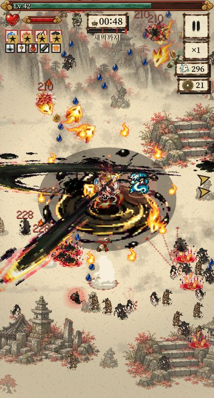
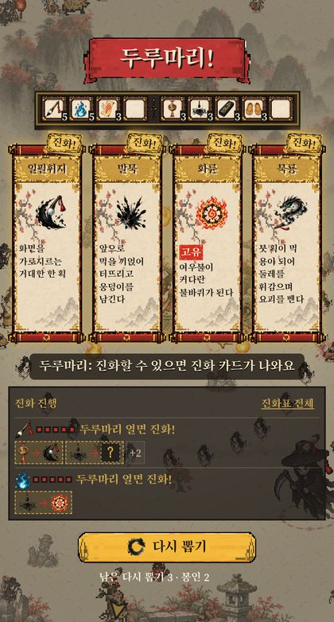
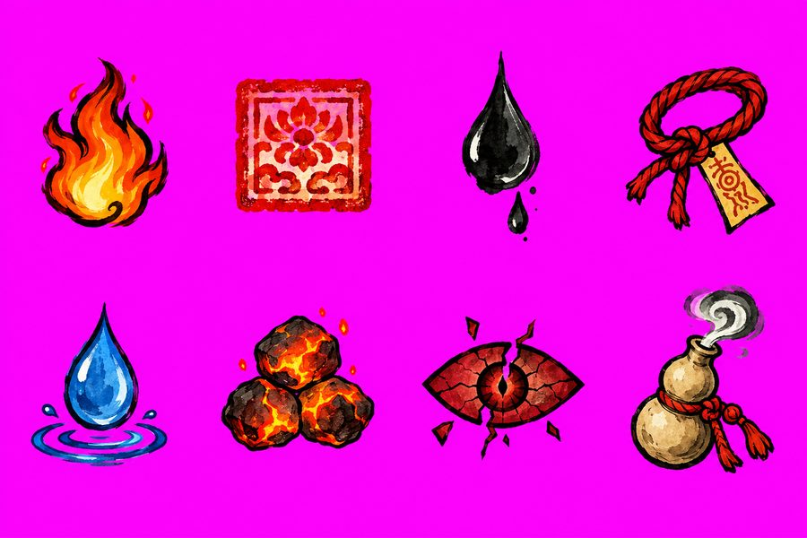
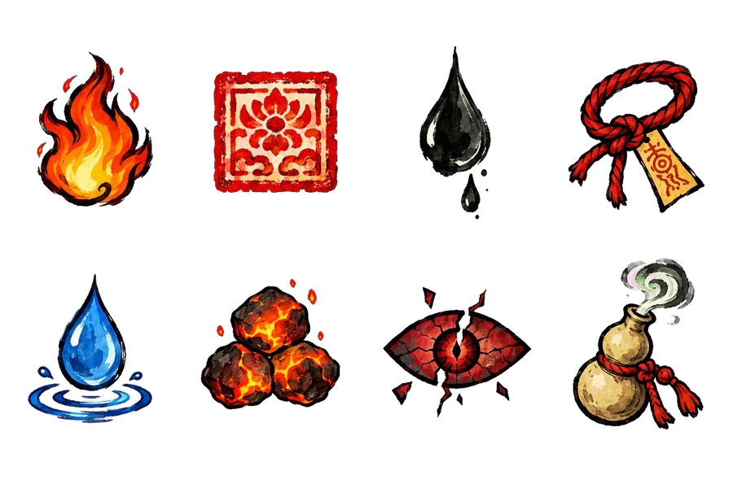
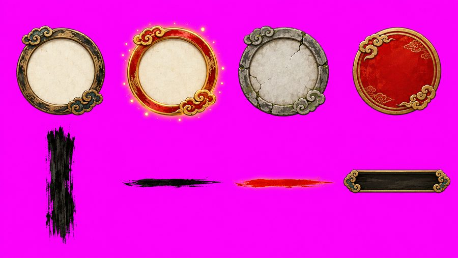
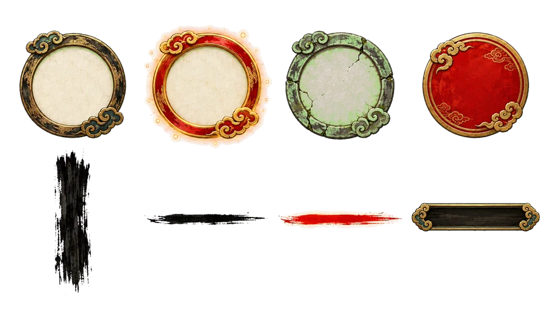

1인 게임 개발,
AI와 실제로 일하는 법
메일로 주신 세 가지 질문(AI를 어떻게 쓰는지, 음악·아트는 어떻게 하는지, 정보는 어디서 얻는지)에 답하려고 만든 문서입니다. 제가 최근 만든 2D 게임 백귀먹행을 만들면서 실제로 쓴 파일, 프롬프트, 결과물을 그대로 예시로 넣었습니다.
먼저 결론부터 말씀드리면, 막히는 이유는 대부분 도구가 아니라 일을 맡기는 단위에 있습니다. AI에게 게임을 통째로 설명하는 큰 프롬프트를 주는 대신, 아주 작은 일을 시키고 AI가 직접 실행해서 화면으로 확인하게 하는 반복이 핵심입니다.
002026년 10월 7일 기준, 체감이 가장 좋은 조합
여러 조합을 써 봤고, 오늘 기준으로 가장 결과가 좋았던 건 아래 두 가지를 역할을 나눠 쓰는 방식입니다.
Claude Code(터미널 앱)로 씁니다. 프로젝트 폴더를 직접 읽고, 코드를 고치고, 빌드하고, 게임을 띄워 캡처해서 스스로 확인합니다. 작업의 90%는 여기서 합니다.
Codex CLI의 이미지 생성 기능만 씁니다. Claude가 프롬프트 파일을 써서 Codex를 터미널에서 직접 부르고, 결과 PNG를 받아 자르고 게임에 넣는 것까지 이어서 처리합니다.
코드는 Claude, 그림은 Codex
기범 님이 지금 Codex 하나로 코드와 기획까지 하고 계신 거라면, 메인을 Claude Code로 옮기고 Codex는 그림만 맡겨 보시는 걸 가장 먼저 권합니다. Codex는 가끔 코드 리뷰를 맡기는 "두 번째 의견" 용도로도 좋습니다.
- anthropics/claude-codeClaude Code 공식 저장소. 설치법, 사용 예시
- openai/codexCodex CLI. ChatGPT 계정으로 로그인해서 터미널에서 씀
- anthropics/skillsClaude에 반복 작업 절차를 "스킬"로 저장하는 예시 모음
01최근작 백귀먹행: 추석 연휴에 시작, 오늘 심사 진입
백귀먹행은 한국 수묵화 풍의 2D 동양 로그라이트(뱀파이어 서바이버류) 모바일 게임입니다. 추석 연휴에 시작해서 오늘(10월 7일) App Store 심사에 들어갔습니다. iOS·Android 둘 다, 12개 언어, 인앱 결제와 보상형 광고까지 붙인 상태입니다.


전에 만든 게임(INKROLL)의 앱 틀과 빌드 설정을 재사용했기 때문에 첫 게임보다 훨씬 빨랐습니다. 첫 게임이라면 이 일정의 두세 배를 잡으시는 게 현실적입니다.
| 날짜 | 한 일 | AI에게 시킨 방식 |
|---|---|---|
| 1일차 | 기획 문서, 이동·자동공격 프로토타입 | 기획을 대화로 정리해 PLAN.md로 저장시킨 뒤, 그 문서를 기준으로 "이동만 되게", "적 하나만 나오게"처럼 잘게 구현 |
| 2일차 | 그래픽 파이프라인, 인물 6·보스 6·아이콘·이펙트 | Claude가 프롬프트 파일을 쓰고 Codex로 그림을 7~11장씩 동시에 생성, 자르기·배경 제거 스크립트를 만들어 자동화 |
| 3일차 | 아이폰 실기기 설치, 내부 테스트 | 빌드·설치 명령을 Claude가 직접 실행, 에러 나면 로그를 읽고 고침 |
| 4~5일차 | 외부 테스트, 밸런스 재시험, Android, 무기 진화 24종 | "자동으로 100판 돌려서 캐릭터별 클리어율 보여줘" 같은 수치 검증 |
| 6일차 | 결제·광고 연결, 홍보 영상 | 게임을 프레임 단위로 녹화하는 개발용 훅을 만들게 해서 영상 자동 생성 |
| 7~9일차 | UI 고해상 교체, 12개 언어, 랜딩 페이지 | 언어별로 모든 화면을 자동 캡처해서 글자 잘림을 찾게 함 |
| 10일차 | Codex로 게임 전체 리뷰 → 치명적 버그·밸런스 수정, 스토어 스크린샷 | 다른 AI에게 리뷰를 받고, 그 문서를 Claude에게 넘겨 하나씩 재현 → 수정 → 재검증 |
| 11일차 | 개인정보 라벨, 검색 최적화, 최종 빌드, 심사 제출 | 스토어 콘솔 작업도 API 스크립트로 처리, 사람은 로그인·최종 버튼만 |
포인트 매일 "오늘 끝낼 것"이 화면으로 확인 가능한 단위였습니다. "게임을 만들어 줘"라고 한 날은 하루도 없습니다.
02AI에게 일 시키는 법
메일에 "아무리 자세한 프롬프트를 써도 원하는 결과가 안 나온다"고 쓰셨는데, 자세할수록 오히려 실패 확률이 올라갑니다. AI는 긴 요구사항을 한 번에 받으면 그럴듯한 겉모습을 먼저 만들고, 세부는 조용히 빼먹습니다. 그래서 방향을 바꿔야 합니다.
원칙 다섯 가지
- 한 번에 하나. 요청 하나에 기능 하나, 화면 하나, 그림 한 종류만.
- 완료 기준을 같이 준다. "끝나면 게임을 띄워서 캡처해서 보여줘", "수치로 보여줘"를 붙입니다. AI가 스스로 확인하게 만드는 게 핵심입니다.
- 기준 문서를 프로젝트에 둔다.
PLAN.md(기획),ART_STYLE.md(그림 규칙),CLAUDE.md(작업 규칙). 매번 설명하지 않고 "PLAN.md 기준으로"라고만 말합니다. - 틀린 걸 고칠 땐 증상만 정확히. "이상해" 대신 "보스를 잡으면 레벨이 8번 연속 올라. 6초 안에 3번 넘게 오르지 않게"처럼.
- 교차 리뷰. 큰 단계가 끝나면 다른 AI(Codex)에게 전체 리뷰를 받고, 그 리뷰를 메인 AI에게 넘겨 하나씩 재현·수정시킵니다.
나쁜 지시와 좋은 지시
기차 역 경영 게임을 만들어줘. 맵은 쿼터뷰이고 기차가 역 사이를 다니고 화물을 실어 나르고 돈을 벌어서 역을 업그레이드하고, 그래픽은 라그나로크처럼 예쁘게, 음악도 넣어줘.
PLAN.md 기준으로 1단계만 하자. - 화면에 회색 격자 바닥(10x10)과 네모 기차 하나만 띄워 - 기차가 A칸→B칸으로 2초에 이동 - 그래픽·소리는 아직 넣지 마 끝나면 실행해서 캡처 보여줘.
그래픽은 맨 나중입니다. 회색 네모로 재미가 확인된 다음에 그림을 입혀야, 그림을 다시 뽑는 일이 줄어듭니다.
03Claude가 Codex를 불러 그림 받기
ChatGPT 창에서 그림을 하나씩 받아 저장하는 방식은 느리고, 스타일이 매번 달라집니다. 저는 Claude가 터미널에서 Codex를 직접 실행하도록 작은 스크립트를 하나 만들어 두었습니다. 그 뒤로는 Claude에게 "상태 이상 아이콘 8개 시트 뽑아서 게임에 넣어줘"라고만 하면 됩니다.
#!/bin/zsh
# 사용: codex_gen.sh <이름> <프롬프트 파일> [참고 그림...]
# 결과: assets/raw/<이름>.png (마젠타 배경 시트)
NAME=$1; PF=$2; shift 2
IMGS=(); for f in "$@"; do IMGS+=(-i "$f"); done
OUT=assets/raw/$NAME.png
codex exec -m gpt-5.6-luna --skip-git-repo-check - "${IMGS[@]}" <<PROMPT
Use your image generation tool to create exactly ONE image, then save it
(the raw generated image, no post-processing, no resizing) to $OUT.
Do not write any code to draw the image yourself. Image description:
$(cat $PF)
The background must be opaque flat magenta #FF00FF (not transparent).
PROMPT- 프롬프트는 파일로 남깁니다.
assets/prompts/에 쌓아 두면 나중에 같은 스타일로 다시 뽑을 수 있습니다. - 참고 그림을 같이 넘깁니다. 이미 만든 캐릭터 그림을
-i로 붙이면 스타일이 훨씬 덜 흔들립니다. - 여러 장을 동시에. Claude가 7~11개를 병렬로 돌려도 문제없었습니다.
- "그림을 코드로 그리지 마"라는 문장이 중요합니다. 없으면 가끔 Python으로 도형을 그려서 저장해 버립니다.
04그래픽 에셋 파이프라인
그림 한 장을 "잘" 뽑는 것보다, 같은 규칙으로 계속 뽑고 자동으로 게임에 들어가게 만드는 게 중요합니다. 백귀먹행에서 그림 300여 장이 이 순서로 들어갔습니다.
- 스타일 문장 고정. 모든 프롬프트에 똑같은 스타일 문장을 붙입니다. 예: Korean ink-wash minhwa illustration, painterly but bold, thick dark ink outline, NOT pixel art. No text.
- 격자 시트로 생성. "2행 x 4열, 칸마다 하나씩 가운데, 칸 경계를 넘지 말 것". 한 장에 8개를 같이 그리면 서로 스타일이 맞습니다.
- 마젠타 배경. 투명 배경을 요구하면 가짜 체크무늬를 그리거나 테두리가 지저분해집니다. 게임에 절대 안 나오는 색(#FF00FF)을 칠하게 하고, 스크립트로 정확히 빼냅니다.
- 자르기·배경 제거. 칸마다 잘라 투명 PNG/WebP로 저장 (
slice_grid.py,key_magenta.py). - 아틀라스로 묶기. 수백 장을 큰 이미지 몇 장으로 합쳐 로딩을 빠르게 (
build_atlas.py). - 게임에 넣고 캡처로 검수. 크기·밝기·다른 그림과 어울림을 실제 화면에서 확인. 아니다 싶으면 1번으로.
실제 예시: 상태 이상 아이콘 8개
A sprite sheet of small status-effect icons for an action game, on a flat
magenta background, arranged in a strict grid of 2 rows x 4 columns, each
icon centered in its own equal square cell with generous empty magenta space
around it, all the same size. Each icon must read clearly when shown very
small (about 16 pixels) above a monster's head: bold simple silhouette,
thick dark ink outline, strong color, minimal detail. Style: Korean ink-wash
minhwa illustration, painterly but bold, high resolution, NOT pixel art.
No text, no letters, no frames, no background plates.
Row 1: (1) BURN: a small orange-red flame with yellow core; (2) MARK: a red
square cinnabar seal stamp; (3) SLOW: a heavy black ink drop with a small
dripping splash; (4) BIND: a loop of red rope tied with a yellow talisman.
Row 2: (1) WET: a blue water droplet with a tiny ripple; (2) HEAT: three
stacked glowing embers; (3) WEAK: a cracked crimson eye-shaped seal;
(4) SEALED: a small gourd bottle with a red cord, sucking in a wisp.
The background must be opaque flat magenta #FF00FF.

프롬프트 작성 요령
- 쓰일 크기를 말합니다. "16픽셀로 작게 보여도 읽혀야 함"이라고 쓰면 디테일을 줄이고 실루엣을 굵게 그립니다.
- 하지 말 것을 명시합니다. No text, no frames, no background plates. 안 쓰면 글자나 받침대를 멋대로 넣습니다.
- 칸마다 무엇인지 번호로. Row 1: (1)…(4). 순서가 고정돼야 자르는 스크립트가 이름을 붙일 수 있습니다.
- 상태 변형은 "the same … but"으로. 아래 UI 시트처럼 "같은 틀인데 선택됨", "같은 틀인데 잠김"이라고 쓰면 한 벌로 맞춰 나옵니다.
- 영어로 씁니다. 이미지 모델은 영어 지시를 더 정확히 따릅니다. 설명은 한국어로 Claude에게 하고, 영어 프롬프트는 Claude가 쓰게 하면 됩니다.


- aldegad/sprite-genAI로 2D 스프라이트·애니메이션 아틀라스를 깔끔하게 뽑는 파이프라인. 위 방식과 비슷한 철학
- danielgatis/rembg배경 제거 도구. 마젠타 배경을 못 쓰는 그림(사진풍 등)에 유용
- aseprite/aseprite도트(픽셀) 그림 편집·애니메이션. AI 결과를 손으로 다듬을 때
- odrick/free-tex-packer스프라이트를 아틀라스 한 장으로 묶는 무료 도구
05보내주신 나무 에셋 진단
카톡으로 보내주신 나무 세 그루를 보면, 그림 자체는 괜찮습니다. 문제는 게임에 넣는 단계에서 생깁니다.
| 증상 | 왜 문제인가 | 해결 |
|---|---|---|
| 배경이 그림에 붙어 있음 (어두운 판) | Codex가 게임에 넣으면 사각형 배경째 들어가거나, 지우다 테두리가 깨짐 | 마젠타 배경으로 다시 뽑고 스크립트로 제거 |
| 세 그루의 시점·크기·외곽선 굵기가 다름 | 나란히 놓으면 다른 게임 그림처럼 보임 | 한 장에 격자로 같이 뽑기 + 스타일 문장 고정 |
| 기준점(발 위치)이 정해지지 않음 | 코드가 어디를 땅에 붙일지 몰라 떠 보이거나 파묻힘 | "밑동이 칸 아래쪽 1/5 지점에 오게"처럼 프롬프트에 명시, 자를 때 바닥 중앙을 기준점으로 저장 |
| 시점이 정면 | 쿼터뷰(비스듬히 내려다보는) 맵과 안 맞음 | "isometric 3/4 top-down view"를 명시하고, 바닥 타일과 같은 각도로 |
메모리 부족으로 다 날아간 문제 생성 원본은 바로 assets/raw/에 저장하고, 프로젝트를 Git으로 관리하세요. 저는 원본 그림을 따로 백업하고, 코드와 프롬프트는 GitHub 비공개 저장소에 올립니다.
06Train Station 같은 3D·쿼터뷰 게임이라면
지금 만드시는 게임이 3D 모델 기반이라면, AI 이미지(2D)를 그대로 3D 게임에 입히려는 순간 막힙니다. 선택지는 세 가지입니다.
A. 진짜 3D로 간다 (추천)
- 나무·건물·기차는 로우폴리 무료 에셋 팩에서 시작합니다. 스타일이 처음부터 맞춰져 있습니다.
- 꼭 필요한 것만 이미지 → 3D 생성 모델로 만듭니다. Codex로 정면·측면 그림을 같은 스타일로 뽑고 3D로 변환합니다.
- 엔진은 Godot(무료) 또는 웹이라면 three.js. Claude는 두 쪽 다 잘 다룹니다.
B. 2.5D (라그나로크 방식)
- 바닥은 3D 또는 쿼터뷰 타일, 오브젝트는 항상 카메라를 보는 2D 그림(빌보드).
- 카메라 각도를 하나로 고정하면 2D 그림만으로 충분합니다. 원래 원하셨던 그림체에 가장 가깝습니다.
C. 완전 2D 쿼터뷰
- 가장 쉽습니다. 바닥 타일과 오브젝트를 모두 같은 각도로 그린 2D 그림으로. 모바일 경영 게임 다수가 이 방식입니다.
A sprite sheet of trees for a cozy isometric railway management game,
on a flat magenta background, strict grid of 2 rows x 4 columns, each tree
centered in its own equal cell with generous magenta margin.
Camera: isometric 3/4 top-down view, the SAME angle for every tree.
Each tree stands with its trunk base at the horizontal center, at 80% of the
cell height (leave the bottom 20% empty for a soft ground shadow).
Style: soft hand-painted 2.5D, clean dark-brown outline, warm sunlight from
the upper left, matching a bright summer palette. NOT pixel art. No text,
no ground tiles, no grass patches, no background plates.
Row 1: (1) round oak; (2) tall pine; (3) birch with white trunk; (4) cherry
tree in bloom. Row 2: (1) small bush; (2) the same oak in autumn colors;
(3) the same pine with snow; (4) a dead tree stump.
The background must be opaque flat magenta #FF00FF.- godotengine/godot무료 2D·3D 엔진. 1인 개발에 가볍고 AI가 코드(GDScript) 작성을 잘함
- mrdoob/three.js웹 3D 라이브러리. 웹/모바일 앱(Capacitor)으로 낼 때
- microsoft/TRELLIS이미지 한 장 → 3D 모델 생성
- Tencent/Hunyuan3D-2이미지 → 텍스처 입힌 3D 모델 생성
- KayKit 에셋무료 로우폴리 캐릭터·소품 팩 (같은 제작자의 다른 팩도 많음)
07맵·필드 만들기
AI에게 맵 전체를 한 장의 그림으로 그리게 하면 충돌 판정, 길찾기, 배치 수정이 모두 불가능해집니다. 맵은 그림과 데이터를 분리합니다.
- 바닥 타일(풀, 흙, 물, 길)과 오브젝트(나무, 바위, 건물)를 각각 시트로 뽑습니다.
- 배치는 맵 에디터(Tiled, LDtk)나 JSON 데이터로 합니다. 예:
{"tree_oak": [[3,4],[5,9]]} - "이 JSON대로 맵을 그리고, 길 위에는 오브젝트가 못 오게 검사해"라고 Claude에게 시킵니다.
백귀먹행은 맵 12개를 이렇게 했습니다. 배경은 큰 수묵 그림 한 장, 그 위의 바위·석탑·나무는 오브젝트 그림을 데이터대로 흩뿌리는 방식입니다. 앞의 플레이 화면에서 아래쪽 석탑과 계단이 그렇게 배치된 오브젝트입니다.
- mapeditor/tiled가장 널리 쓰는 타일맵 에디터. 쿼터뷰(isometric) 지원
- deepnight/ldtk가볍고 현대적인 2D 레벨 에디터
08음악·효과음
"GPT에게 물어서 음정을 만드는" 방식은 거의 항상 실패합니다. 언어 모델은 악보를 글로 쓸 수는 있어도, 그게 듣기 좋은 곡인지는 판단하지 못합니다. 2주를 쓰셨는데 결과가 없던 건 기범 님 탓이 아닙니다.
백귀먹행에서 한 방식: 코드로 합성하는 음악
음악 파일이 하나도 없습니다. 게임 안에서 Web Audio로 타악기·선율·저음을 실시간 합성합니다. 맵·보스마다 곡 패턴이 있고, 화면에 적이 많을수록 빨라지고, 흉조(난이도) 단계가 오르면 템포가 올라가고 소리가 탁해집니다. 장점은 용량 0, 저작권 걱정 없음, 게임 상황에 반응한다는 것입니다. 다만 "멋진 곡"보다는 "분위기 있는 반복"에 가깝습니다.
// 매 프레임: 지금 상황을 음악 엔진에 알려줌
audio.setMix({
key: boss ? 'boss_tiger' : 'night', // 맵·보스별 곡
mode: state, // 메뉴 / 전투 / 일시정지 / 레벨업
danger: enemiesOnScreen / 200, // 0~1, 높을수록 빠르고 밝게
curse: curseTier, // 0~3, 높을수록 템포 올리고 소리 탁하게
});현실적인 선택지
- 곡이 필요하면: 음악 생성 AI 서비스(Suno 등)로 만들고, 상업적 이용이 되는 요금제인지 약관을 꼭 확인합니다. 또는 무료·유료 BGM 사이트에서 라이선스가 명확한 곡을 씁니다.
- 효과음: 효과음 생성기(ZzFX, jsfxr)로 클릭 몇 번에 만들거나, 무료 효과음 팩을 씁니다. 효과음은 AI로 만드는 것보다 이게 훨씬 빠릅니다.
- 상황에 반응하는 음악: Tone.js로 루프 몇 개를 겹쳐 두고, 위처럼 게임 상태에 따라 켜고 끄게 Claude에게 시킵니다.
- Tonejs/Tone.js브라우저에서 음악을 코드로 만드는 라이브러리
- KilledByAPixel/ZzFX아주 작은 효과음 생성기. 웹에서 바로 만들어 코드 한 줄로 재생
- chr15m/jsfxr레트로 효과음 생성기
- facebookresearch/audiocraftMeta의 음악·효과음 생성 모델 (직접 돌려야 해서 고급)
09AI가 스스로 검수하게 만들기
"됐어요"라는 AI의 말을 믿지 않고, 눈으로 볼 수 있는 증거를 받는 게 품질을 가장 크게 올렸습니다.
- 개발용 훅. 게임 주소에
?dev를 붙이면 시간을 멈추고 한 프레임씩 진행하는 함수가 열리게 했습니다. Claude가 "보스 등장 장면", "진화 카드 화면"을 정확히 재현해 캡처합니다. - 헤드리스 브라우저 캡처. 화면 없이 브라우저를 돌려 언어별로 28개 화면을 자동 캡처하고, 글자가 넘치거나 잘린 곳을 목록으로 뽑았습니다.
- 자동 플레이 수치. "100판 자동으로 돌려서 캐릭터별 클리어율"처럼 밸런스를 숫자로 확인합니다.
- 스토어 스크린샷과 홍보 영상도 같은 훅으로. 같은 장면을 언어만 바꿔 찍으니 12개 언어 스크린샷이 자동으로 나옵니다.
- microsoft/playwright브라우저 자동화. 캡처·자동 플레이·영상 녹화에 사용
10출시까지
- 웹 기술로 만들고 앱으로 포장. 게임은 웹(TypeScript)으로 만들고 Capacitor로 iOS·Android 앱을 만들었습니다. 한 코드로 양쪽에 나갑니다.
- 테스트 일정을 먼저 잡기. Google Play 신규 개인 개발자는 테스터 12명이 14일 동안 비공개 테스트를 해야 정식 출시가 됩니다. 개발과 병행해서 일찍 시작하세요.
- iOS 빌드는 정식 Xcode로. 오늘 베타 버전 Xcode로 만든 빌드가 심사에서 거부돼 다시 빌드했습니다.
- 개인정보 라벨. 광고(AdMob)나 분석(Firebase)을 쓰면 "수집 데이터 없음"으로 두면 안 됩니다. 양쪽 스토어 모두 수집 항목을 정확히 신고해야 합니다.
- 스토어 작업도 스크립트로. 12개 언어 설명·스크린샷 업로드를 API 스크립트로 처리했습니다. Claude에게 "App Store Connect API로 올리는 스크립트 만들어줘"라고 하면 됩니다.
- ionic-team/capacitor웹 게임을 iOS·Android 앱으로 만드는 도구
- phaserjs/phaser웹 2D 게임 엔진. 처음 시작한다면 직접 엔진을 짜는 것보다 쉬움
11정보 얻을 곳
정리된 자료 목록
- ellisonleao/magictools게임 개발 도구·에셋·튜토리얼을 분야별로 정리한 목록. 처음 볼 곳
- Calinou/awesome-gamedev무료·오픈소스 게임 개발 자료 모음
사람을 만날 곳
- 게임잼. Global Game Jam(매년 1월 말), itch.io의 상시 잼. 48시간 안에 작은 게임 하나를 끝내 보는 경험이 가장 빨리 늡니다. 국내 오프라인 현장도 열립니다.
- 인디 게임 행사. 부산인디커넥트(BIC) 페스티벌, 버닝비버 같은 국내 인디 행사에 관람객으로라도 가 보세요. 개발자들이 직접 부스를 지키고 있어서 이야기하기 쉽습니다.
- 해외 커뮤니티. Reddit r/gamedev, r/IndieDev. 해외 생활을 오래 하셨으니 영어권 자료가 오히려 강점입니다. GDC Vault의 무료 강연도 추천합니다.
- 만든 걸 계속 공개하기. 개발 일지를 짧게라도 올리면 사람이 붙습니다. 정보는 결국 그렇게 연결된 사람에게서 가장 정확하게 옵니다.
12복사해서 쓰는 템플릿
# 작업 규칙
- 기획은 docs/PLAN.md, 그림 규칙은 docs/ART_STYLE.md를 기준으로 한다.
- 한 번에 하나의 기능만 구현하고, 끝나면 게임을 실행해 캡처로 보여준다.
- 그림은 scripts/codex_gen.sh로 생성한다. 프롬프트는 assets/prompts/에 파일로 남긴다.
- 생성 원본은 assets/raw/, 잘라낸 결과는 assets/sprites/에 둔다.
- 숫자가 걸린 변경(밸런스, 성능)은 전후 수치를 함께 보고한다.
- 사용자 저장 데이터는 테스트에서 절대 덮어쓰지 않는다.# 그림 규칙
STYLE: soft hand-painted 2.5D, clean dark-brown outline, warm light from the
upper left, bright summer palette, NOT pixel art.
CAMERA: isometric 3/4 top-down view, same angle for every object.
SHEET: flat magenta #FF00FF background, strict grid, one object per cell,
generous margin, nothing crossing cell borders.
ANCHOR: object base at horizontal center, 80% of cell height.
NEVER: text, letters, frames, ground patches, background plates.codex CLI가 설치돼 있어. scripts/codex_gen.sh를 만들어서
codex로 이미지를 생성해 assets/raw/에 저장하게 해줘 (배경은 마젠타).
그다음 마젠타 배경 격자 시트를 칸별로 잘라 투명 PNG로 만드는
scripts/slice_grid.py도 만들어줘.
테스트로 ART_STYLE.md 규칙대로 나무 8종 시트를 하나 뽑아서,
자른 결과를 게임 맵에 3개만 배치하고 캡처해서 보여줘.그림 하나 넣을 때 체크리스트
- 스타일 문장을 그대로 붙였나
- 마젠타 배경, 격자, 칸 번호를 지정했나
- 게임에서 보일 크기와 기준점(발 위치)을 적었나
- 글자·받침대 금지를 적었나
- 프롬프트를 파일로 남겼나
- 게임 화면에 넣고 캡처로 다른 그림과 나란히 확인했나